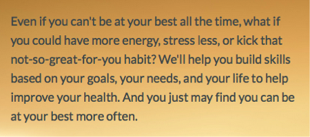
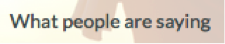

JNJ Front-end Accessibility Standards & Best Practices
Media
Alt text for images
Text alternatives provide a text equivalent of visual information for users who can't see images. Without text alternatives, information in images is not accessible. With incorrect text alternatives, image-based information is confusing, misleading, or irrelevant.
When images are enclosed in a link or a button, the images’ alternate text needs to describe not just the image but also what will happen when the link is clicked.
Recommendations
All images using the <img> element must be given appropriate alternative text using the alt attribute
Follow these rules for alternative text:
- If the content displays specific information, the text shall be an accurate, concise and equivalent presentation of this information.
- If an image is purely decorative, for example an image that is used for styling or layout purposes only, implement it as a CSS background image. If this isn’t a feasible solution, an empty alternative (e.g. alt="") must be always used. This will prevent assistive technology from trying to find a different way to describe the content (such as announcing the image's filename). Don’t use null alt attributes when images do convey meaningful content.
- Phrases such as “image of…”, “graphic of…”, “… logo” or “click here” must be avoided.
- If the image is the sole content of a link, the alt attribute should describe the link target, not the image.
- If the content identifies a specific state (e.g. an icon that indicates incorrect input), this state must be described rather than the actual content.
- Refer to HTML5: Techniques for providing useful text alternatives for comprehensive advice on text alternatives.
- Don’t use the title attribute on images or links since doing so can lead to screen-reader users hearing that announcement twice.
- Provide suitable direct equivalents for information presented in graphical format (such as a graph or a chart). This can be achieved by:
- Providing short alternative text which briefly summarizes the content (Refer to: Providing short text alternatives that provide a brief description of the non-text content) AND
- Providing a direct text/tabular equivalent of the graph/chart close to the image, or on a separate page using an appropriate link (Refer to: Providing a long description in text near the non-text content, with a reference to the location of the long description in the short description)
Examples
| Image | Function | Current Alt | Recommended Alt |
|---|---|---|---|
| Video thumbnail that, when its surrounding link clicked, plays the video | alt="Skills For Life" |
alt="Play Skills For Life video" |
|
| Video thumbnail that, when its surrounding link is clicked, plays the video | alt="People Profiles" |
alt="Play People Profiles video" |
|
| [logo-hm-overlay.png—a potentially transparent image] | Decorative image | (none) | alt="" |
| Decorative image | (none) | alt="" |
|
| Branding image | (none) | alt="Wellness and Prevention" or alt="Wellness and Prevention, a Johnson & Johnson company" (Either version would be fine, depending on branding preferences.) |
|
| Decorative image within the context of its surrounding content | alt="My Mission" |
alt="" |
Related Standards
WCAG 2.0 — 1.1.1 Non-text Content (Level A)
All non-text content that is presented to the user has a text alternative that serves the equivalent purpose.
WCAG 2.0 — 4.1.2 Name, Role, Value (Level A)
For all user interface components (including but not limited to: form elements, links and components generated by scripts), the name and role can be programmatically determined; states, properties, and values that can be set by the user can be programmatically set; and notification of changes to these items is available to user agents, including assistive technologies.
Alt text for font-icons
Icon fonts are just regular fonts, but instead of containing letters, numbers, and other typical font characters, they contain icons. As a simplified example, if you were to type an “m” using an icon font that might be displayed as a mailbox icon; or if you were to type an “h” using an icon font, that might be displayed as a home icon. The downside to icon fonts is that screen-reader users would only hear “m” or “h” or whichever letter is representing the icon that happens to be used—because the screen reader doesn’t know that the “m” happens to look like a mailbox and the “h” happens to look like a home icon.
Issue
Recommendations
- Hide the character that triggers the icon from screen readers.
- Then provide alternate text to describe what the icon represents.
Example
- The
aria-hidden="true"attribute on the icon tells screen readers to ignore that element. (This prevents the screen reader from announcing whichever character may be in use there.) - The
<span class="visually-hidden">Close</span>describes the icon, and the class="visually-hidden" part ensures that the “Close” text will only be available to screen readers. (That is, “Close” won’t appear on the screen anywhere.)
Related Standards
WCAG 2.0 – 1.1.1 Non-Text Content (Level A)
All non-text content must have a text alternative that serves the same purpose. For images, ensure the alt attribute is an equivalent if the image isn’t presented.
WCAG 2.0 – 1.3.1 Info and Relationships (Level A)
Information, structure, and relationships conveyed through presentation can be programmatically determined or are available in text.
Audio descriptions of visual media
The videos on the home page don't have an audio-description track. This results in blind users not being able to fully understand the content of the videos.
For instance, the "Skills for Life" video has various on-screen headings (such as "Building Motivation" and "Coordinating Care") that a person who may be blind wouldn’t otherwise be aware of without an audio description.
Recommendations
For hearing impaired — Closed Captioning
For visually impaired — Audio Descriptions of visual content or video text
Related Standards
WCAG 2.0—1.2.3 Audio Description or Media Alternative (Prerecorded) (Level A)
An alternative for time-based media or audio description of the prerecorded video content is provided for synchronized media, except when the media is a media alternative for text and is clearly labeled as such.
WCAG 2.0 - 1.2.5 Audio Description (Prerecorded) (Level AA)
Audio description is provided for all prerecorded video content in synchronized media.
ASCII art used as image
"ASCII art" is images created using special arrangements of text characters and symbols. For example, "->" often is used as an arrow. Screen readers read most ASCII art literally, which can be extremely confusing. For example, "->" reads as "dash greater."
ASCII art is present in some tested screens. In the image below a ">" is used and announced by JAWS as "more news greater than link"
Recommendations
Don't use ASCII art...just DON'T.
Related Standards
WCAG 2.0 – 1.1.1 Non-Text Content (Level A)
All non-text content must have a text alternative that serves the same purpose. For images, ensure the alt attribute is an equivalent if the image is not presented.
WCAG 2.0 – 4.1.2 Name, Role, Value (Level A)
For all user interface components (including but not limited to: form elements, links and components generated by scripts), the name and role can be programmatically
Structure
Semantic markup
When list-based content is marked up as a list, assistive technology users can quickly navigate to the content, and easily skip over it and easily orient themselves within it (particularly useful for nested lists). When it is not, the user has to find it by moving through the entire page, and cannot skip over it.
While most tested samples use lists correctly, in others proper use of lists would provide missing semantic structure to the code, improving the experience for the user.
In the example below, the items in the left column of the page explain the various stages in the Succeed section of the app, however, there is no programmatic association between these elements to expose any kind of relationship between them.
Recommendations
Make sure that, where content is organized as a list, the appropriate list markup (<ol>, <ul> and <li> elements) is used. Avoid using asterisks or other characters within HTML to make items not marked up as a list look as if they represent items within a list. The rule of thumb to follow is: if it looks like a list, mark it up as a list.
In the formentioned example, these elements would be better presented as a description list (<dl>). This would allow the user to understand the relationship between the name of the section (<dt>) and it's description (<dd>).
Related Standards
WCAG 2.0 – 1.3.1 Info and Relationships (Level A)
Information, structure, and relationships conveyed through presentation can be programmatically determined or are available in text.
Human language of page content
The lang attribute is used on <html> element to indicate the overall language a page, and the lang attribute can also be used on individual elements to indicate that they’re in a language that’s different from the main language of the page. The lang attribute explicit defines what language a page or an element is in so that an appropriate language dictionary can be used; and in the case of screen readers and similar assistive technologies with voice output, it also ensures that the content is pronounced using the right voice or language library.
Currently, all tested pages correctly set the lang attribute of their <html> elements correctly to "English" or "Spanish" as needed.
Recommendations
If certain elements within a page use a language that’s different from the language that’s set on the page’s <html> element, those elements (or one of their containing elements) need to have a lang attribute to convey that they’re in a different language.
Related Standards
WCAG 2.0 – 3.1.1 Language of Page (Level A)
The default human language of the page must be programmatically determinable.
WCAG 2.0 – 3.1.2 Language of Parts (Level AA)
The human language of each passage or phrase in the content can be programmatically determined except for proper names, technical terms, words of indeterminate language, and words or phrases that have become part of the vernacular of the immediately surrounding text.
Tables
Tables used for layout
Using HTML table element structures for layout purposes can cause significant problems for assistive technology users. Assistive technologies use the structure of an HTML table to present data to the user in a logical manner. When they encounter a layout table they may believe they are navigating through tabular data when they are not. It also means that extra, redundant, information (such as row and column numbers) is announced whenever a screen reader user navigates to a particular component, such as a link. This can add to the cognitive load by introducing extra noise that masks understanding of the content. In the Succeed Questionnaire, a layout table is sued to display images of foods the user does not eat.
Recommendations
The best practice recommendation is to eliminate the use of table elements to visually position content unless the content is data that should be presented in tabular format. Instead, where content does not relate to a table of data, use CSS to control its layout. As a result, assistive technologies do not announce redundant information, such as row and column headers.
Non-disruptive alternative (viable under certain conditions)
An alternative approach which can be utilized until a recoding solution is feasible is to use the WAI-ARIA role attribute with a value of presentation on any <table> elements that are being used purely for layout purposes.
Related Standards
WCAG 2.0 – 1.3.1 Info and Relationships (Level A)
Information, structure, and relationships conveyed through presentation can be programmatically determined or are available in text.
Forms
Labeling form controls
Always provide a visible, programmatically associated, label for controls. The recommended approach is to use the <label> element with a for attribute containing a value which matches the id attribute of the relevant form control. The form control’s title attribute can be used instead of the <label> element, provided there is also a visible prompt for what should be entered in the field, as in a search input followed by a Search button.
If the HTML required attribute is not being used it is recommended that the aria-required attribute be added to required fields as this provides a programmatic indication that is announced by assistive technology that support it (example: row 2 of Table 4).
| HTML Element and type | Example |
|---|---|
input type="text" |
<label for="email_address">email address<label><input type="text" id="email_address"> |
Required text fields using aria-required |
<label for="email_address">email address <img src="asterisk.png" alt="Required" /></label><input type="text" id="email_address" aria-required="true"> |
input type="password" |
<label for="t2">Password</label><input type="password" id="t2"> |
input type="button" |
<input type="button" value="Add engraving"> |
input type="submit" |
<input type="submit" value="Continue"> |
input type="image" |
<input type="image" src="select.png" alt="Select"> |
input type="radio" |
<input type="radio" id="t3"> <label for="t3"> Yes</label> |
input type="checkbox" |
<input type="checkbox" id="t5"><label for="t5">Subscribe </label> |
select |
<label for="t6">Title</label><select id="t6"><option>Option</option>...</select> |
textarea |
<label for="t7">Your comments</label><textareaid="t7"></textarea> |
button |
<button id="subscribe" type="submit">Subscribe</button></code> |
Use of title attribute when visible label is implicitly associated |
<input type="text" title="search"><input type="submit" value="search"> |
Related Standards
WCAG 2.0 – 3.3.2 Labels or Instructions (Level A)
Labels or instructions are provided when content requires user input.
WCAG 2.0 – 4.1.2 Name, Role, Value (Level A)
For all user interface components (including but not limited to: form elements, links and components generated by scripts), the name and role can be programmatically determined; states, properties, and values that can be set by the user can be programmatically set; and notification of changes to these items is available to user agents, including assistive technologies.
Notification of errors
Error messages can be used to indicate when a user has not provided sufficient or correct information, or when there is a mismatch between the input information and required information. If not identified as an error, the message may not be apparent to assistive technology users.
In the following example, errors are listed at the top of the page, and the inputs with errors are visually identified using color. However, none of the error indicators are identified programmatically, and error descriptions are not programmatically tied to their respective inputs.
Recommendations
Required fields should be identified using WAI-ARIA’s aria-required attribute.
Make sure that warning and error messages are clearly identified, and provide suitable advice on recovering from the error. Put error messages at the start of forms, to draw user attention to the nature and location of the form.
Inline messages can be very useful when designed and coded correctly.
- Enclose the message components in a container
divelement - Add the role of
alertto the containing element so that it is announced to screen readers when an error or update occurs - Ensure the message begins with a heading so that it is discoverable; mark up the heading with an
idattribute, so it can used to label the message - Use the
aria-labelledbyattribute on the container div, with the message heading id attribute as its value - When appropriate, use list markup to list messages, so information about the number of items is conveyed meaningfully to screen reader users
When errors are found during form validation and the page is reloaded to display those errors, shift focus to the global error message. One method of doing so is to use JavaScript.
Related Standards
3.2.4 Consistent Identification (Level AA)
Components that have the same functionality within a set of Web pages are identified consistently. This requires text alternatives being consistent throughout the document, and consistent labelling of form controls and table headers.
WCAG 2.0 - 3.3.1 Error Identification (Level A)
If an input error is automatically detected, the item that is in error is identified and the error is described to the user in text.
3.3.3 Error Suggestion (Level AA)
If an input error is automatically detected and suggestions for correction are known, then the suggestions are provided to the user, unless it would jeopardize the security or purpose of the content.
WCAG 2.0 - 4.1.2 Name, Role, Value (Level A)
For all user interface components (including but not limited to: form elements, links and components generated by scripts), the name and role can be programmatically determined; states, properties, and values that can be set by the user can be programmatically set; and notification of changes to these items is available to user agents, including assistive technologies.
Color and contrast
Color contrast
The level of contrast between foreground and background colors affects usability—more contrast makes it easier to distinguish characters and symbols. So it’s important to ensure that there is significant contrast between the color of text and its background color, so that is easily readable. This is particularly important for people with visual impairments that affect visual acuity or color perception.
Recommendations
| Image | Function |
|---|---|
Text overtop the hero image  |
Darken the foreground color to at least #2F3232 to increase its color-contrast ratio to 4.6:1 |
|
Gray text surrounding the video thumbnails that’s overtop the appendages of the woman in the background  |
Darken the foreground color to at least #5B6567 to increase its color-contrast ratio to 4.7:1 |
Related Standards
WCAG 2.0 – 1.4.3 Contrast (Minimum) (Level AA)
The visual presentation of text and images of text has a contrast ratio of at least 4.5:1.
Information imparted through color alone
Color is an important asset in the design of web content, enhancing its aesthetic appeal, usability, and its accessibility. Some users, however, have difficulty perceiving color. People with partial sight often experience limited color vision, and many older users don’t see color well.
Recommendations
Whenever color is used to convey information, make sure that the information is available without needing to see the color. For example, you could add a clearly perceivable border to form fields that are invalid or—even better—you could add a blurb of text alongside the fields that may have errors.
Related Standards
WCAG 2.0 – 1.4.1 Use of Color (Level A)
Color is not used as the only visual means of conveying information, indicating an action, prompting a response, or distinguishing a visual element.
Role and state
Button
The site has many elements that, to the average user, would probably be thought of as "buttons", such as "Close" buttons, menu buttons, "Choose X" buttons, and the like. In the site’s current implementation, however, many of the site's "buttons" are coded using other elements, such as links or <div>s or <span>s rather than <button> elements.
Keyboard users often use the Tab key to cycle through the focusable elements within a page, but would-be buttons that are created through elements like <div>s and <span>s aren't keyboard accessible because there’s no means to focus them.
When links are used for "buttons", the elements are often focusable, but users may misinfer the elements' purpose if they were to assume that the link is going to take them to another page (or to another area within the current page).
For instance, if a screen-reader user were to come across a link that said "View Transcript", they might assume that clicking on it would take them to another page (rather than being displayed within an overlay).
Recommendations
As a rule of thumb, other than elements that are literally links, clickable controls should be created with <button> elements.
For instance, all the interactive elements within the home page’s "Skills for Life" (at the time of this document creation) would be suitable as <button> elements: the video thumbnail, the “Play Video” button, and the “View Transcript” button.
If you're have no way around using an anchor element to create a "button", you'll need to either include the href attribute with an empty fragment identifier (href="#") or add tabindex="0" to the link so that it’s included in the keyboard tab order. If you use an empty fragment identifier (such as href="#"), you’ll also need to cancel the default action for the anchor element when it’s activated—if you don’t, an anchor with an empty fragment identifier will place focus at the start of the page.
You'll also need to add some JavaScript to make the would-be button accept to the same keyboard controls as native <button> elements. Namely, you’ll need to add keypress event handlers to the element to ensure that if someone focuses the element and presses Enter or Space, the element will react just the same as if they had clicked it. For instance, if you were to have a "View Transcript" link that acts like a button, you'd need to ensure that users could focus the element and press Enter or Space to trigger the transcript's overlay.
Given the effort involved in creating "buttons" from whole cloth, we recommend using native <button> elements for clickable controls wherever you can.
Related Standards
WCAG 2.0 – 2.1.1 Keyboard (Level A)
All functionality of the content is operable through a keyboard interface without requiring specific timings for individual keystrokes, except where the underlying function requires input that depends on the path of the user's movement and not just the endpoints.
WCAG 2.0 – 4.1.2 Name, Role, Value (Level A)
For all user interface components (including but not limited to: form elements, links and components generated by scripts), the name and role can be programmatically determined; states, properties, and values that can be set by the user can be programmatically set; and notification of changes to these items is available to user agents, including assistive technologies.
Dropdown menus
We're using the term "dropdown menu" to describe navigation menus such as the "hamburger" menu (which is in the top-left corner of the dashboard) as well as the "profile" menu (which in the top-right corner of the dashboard).
In their current implementation, the dropdown menus within the site use mostly semantic markup. But they aren’t accessible to keyboard users, and, and they don’t have the corresponding ARIA properties to convey their current state.
Recommendations
Here’s the markup recommended for inline dropdown menus without a close button:
And here’s the markup recommended for full-screen dropdown menus with a close button:
The key accessibility and ARIA roles and states are:
- aria-haspopup — indicates that a button item has a sub-menu associated with it. (For dropdown menus, this should always be set to true.)
- aria-expanded — indicates that a menu is open (which usually implies it is visually expanded on-screen). Set this to true when the dropdown is visible and false when the dropdown is closed.
- aria-hidden — tells screen readers to ignore these elements. This attribute is used on elements containing icon-font icons, and aria-hidden ensures that screen readers don’t attempt to pronounce the Unicode characters that create those icons.
<span class="visually-hidden"></span>— provides text equivalents for icon-font icons. In this example, for instance, this tells screen readers that the "X" icon is a "Close" button. (This technique is discussed in more detail in the section on "Alternative text for icon-font icons.")
The menu button must support the following keystrokes:
Enter
- When the top-level button is focused: Open the dropdown menu and leave focus on the originating
<button>element. - When the close button is focused: Close the dropdown and programmatically focus the top-level
<button>. - When a link is focused: The link is clicked (normal behavior).
Tab
- When the top-level button is focused but the dropdown is closed: Focus moves to the next visible focusable item within the page. (This behavior should happen automatically; it shouldn’t require any special programming.)
- When the top-level button is focused and the dropdown is open: Focus moves to the first focusable item in the
<nav>area—which will be either the "Close"<button>(if there is one) or the first link in the list. (This behavior should happen automatically; it shouldn’t require any special programming.)
Esc
- Close the dropdown menu and programmatically focus the top-level
<button>.
Related Standards
2.1.1 Keyboard (Level A)
All functionality of the content is operable through a keyboard interface without requiring specific timings for individual keystrokes, except where the underlying function requires input that depends on the path of the user's movement and not just the endpoints. (Level A)
4.1.2 Name, Role, Value (Level A)
For all user interface components (including but not limited to: form elements, links and components generated by scripts), the name and role can be programmatically determined; states, properties, and values that can be set by the user can be programmatically set; and notification of changes to these items is available to user agents, including assistive technologies.
Dialog/Modal overlay markup
The site makes use of several modal dialogs, including the overlays for the videos and video transcripts (on the home page) as well as overlays to convey error messages in some instances.
The pop-up overlays are modal, which means all content 'behind' them must be hidden from the perspective of keyboard and assistive-technology users. But there are a number of situations where it's possible to navigate outside of the overlay and into the page below, either by using the Tab key or the 'virtual cursor' in screen readers.
Recommendations
All overlays should have a role of dialog if the user may need to interact with the contents of the overlay, or a role of alertdialog if the overlay contains a brief set of content that should automatically be read to the user.
So for instance, the overlays for error messages should use role="alertdialog" because users would want to be able to hear those errors as soon as the overlay appears. But on the other hand, the overlays for the videos and video transcripts would be better suited with role="dialog"—because with the video overlays, users may need to interact with the videos' controls, and with the transcript overlays, users may prefer to ingest the transcripts at their own pace (rather than having the transcripts automatically read aloud in their entirety).
The key accessibility and ARIA roles and states are:
- aria-labelledby — indicates the IDs of the elements that should be form the label for the overlay. So in the case of most overlays, their aria-labelledby attribute would point to the ID of whichever heading element is at the top of the overlay.
tabindex="-1"— ensures that the containing element can be programmatically focused through JavaScript.
Properties just for ordinary overlays:
role="dialog"— tells assistive technologies that this element is an ordinary overlay.
Properties just for alert dialogs:
role="alertdialog"— tells assistive technologies that this element is an overlay with an alert.aria-describedby— indicates which element should be read aloud automatically when the overlay is shown. (The example code happens to use id=”overlay-content” for the element containing the content, but feel free to use whichever ID you might like—as long as the overlay’s aria-describedby attribute matches that ID.)
All background content should be hidden using the aria-hidden attribute (aria-hidden="true") to help further prevent screen-reader users from accidentally navigating into the background content using virtual keystrokes.
Related Standards
4.1.2 Name, Role, Value (Level A)
For all user interface components (including but not limited to: form elements, links and components generated by scripts), the name and role can be programmatically determined; states, properties, and values that can be set by the user can be programmatically set; and notification of changes to these items is available to user agents, including assistive technologies.
Title attribute
Some controls have a redundant title attribute that repeats the control name. This can cause screen readers to announce the control label twice.
Recommendations
As a rule of thumb, don't use title attributes on links or buttons or other elements—because that can lead to screen-reader users hearing those announcements twice. (There are a few rare edge cases where a title attribute may be of use, but other than those instances—which are called out within this document—you can assume that all other elements should have their title attributes removed.)
The title attribute is only intended to provide supplementary information. Instead, label links and controls using their respective alternative-text mechanisms (such as alt attributes for images and <label> elements for inputs).
The recommended markup below, for the "Forgot User Name" and "or Password" links, represents one of the rare edge case where a title attribute can be of use. While the "Forgot User Name" link is descriptive enough on its own—and so it shouldn't have a title attribute—there's a chance that the "or Password?" link could be ambiguous if a screen-reader user were to come across that link out of context. So in this specific case, the title attribute on “or Password?” can be retained since its title attribute helps more fully describe the link's purpose.
Related Standards
WCAG 2.0 – 4.1.2 Name, Role, Value (Level A)
For all user interface components (including but not limited to: form elements, links and components generated by scripts), the name and role can be programmatically determined; states, properties, and values that can be set by the user can be programmatically set; and notification of changes to these items is available to user agents, including assistive technologies.